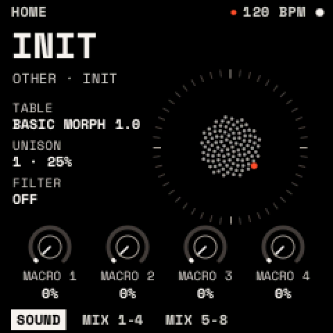
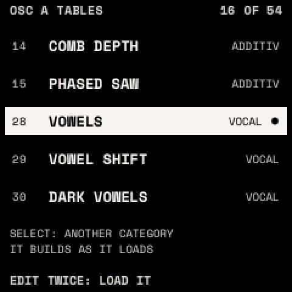

The sound
A sound is two wavetable oscillators (OSC A, OSC B), a SUB oscillator and NOISE through a FILTER. Defaults for every parameter are in the parameter reference.
HOME

HOME shows the selected track's sound, with the bloom, a ring of dots that swirls with the sound.
- KNOB 1–4 are MACRO 1–4: each moves whatever the sound assigns to it (macros).
- Turn SELECT to choose the track (T1 to T8); turn PRESETS to choose a sound.
- ALGORITHM shows MIX 1-4 and MIX 5-8: the eight tracks' volumes on the knobs.
How to

Switch a source or the filter on: press EDIT, turn SELECT to OSC B, SUB, NOISE or FILTER, then hold EDIT and press OCT+. (OCT− switches it off.)
Choose a wavetable from a list:
- Show OSC A or OSC B and press EDIT twice.
- Turn SELECT to jump between categories and PRESETS to choose a table.
- Press SAVE twice to load it.
OSC A and OSC B
A wavetable is a row of single-cycle waves; WT POS morphs through them. Each oscillator has five pages, then VALUES.
| Page | Parameter | What it does | Range |
|---|---|---|---|
| WAVE | WT POS | Position in the table | 0–100 % |
| TABLE | One of the 54 tables | ||
| WARP | How the wave is read: SYNC, BEND+/−, PWM, ASYM+/−, MIRROR, FM (from the other oscillator) | OFF … FM | |
| AMOUNT | How much WARP does | 0–100 % | |
| UNISON | UNISON | Stacked copies per note | 1–16 |
| UNI MODE | Detune spread: LINEAR (even) or SUPER (denser at the centre) | ||
| DETUNE | How far the copies are detuned | 0–100 % | |
| BLEND | Level of the side copies against the centre | 0–100 % | |
| SPREAD | WIDTH | Stereo spread of the copies | 0–100 % |
| WT SPRD | Each copy at a slightly different WT POS | 0–100 % | |
| PHASE | Start point of each note's cycle | 0–360° | |
| RAND | Randomness of each copy's start | 0–100 % | |
| PITCH | OCT, SEMI, FINE | Tuning | ±4 oct, ±12 st, ±100 ct |
| PH MODE | RETRIG (restart at each note) or FREE (keep running) | ||
| OUTPUT | LEVEL, PAN | Level and position | |
| ROUTE | Through the FILTER, or DIRECT past it |
Tip: for FM, turn OSC B on with a sine-like table and its LEVEL at 0, then set OSC A's WARP to FM. OSC B's PITCH now sets the FM ratio and AMOUNT its depth.
The 54 tables, by category:
| Category | Tables |
|---|---|
| ANALOG | BASIC MORPH, SAW, SQUARE, TRI TO SAW, SAW TO SQR, SINE TO TRI, PULSE WIDTH, SOFT PULSE, DARK SAW |
| ADDITIVE | ODD TILT, ALL TILT, ODD TO EVEN, COMB SWEEP, COMB DEPTH, PHASED SAW |
| VOCAL | VOWELS, VOWEL SHIFT, DARK VOWELS, BRIGHT A-I, CHOIR |
| SPECTRAL | BAND SWEEP, TWIN BANDS, WIDE BAND, BAND SPREAD, CHAOS A, CHAOS B, DUST, DRAWBARS, BELLS, GLASS, STRINGS, HOLLOW |
| SYNC | SYNC SAW, SYNC SQUARE, SYNC SINE, SYNC TRI |
| FM | FM 1:1, FM 1:2, FM 1:3, FM 2:7, FM 1:5 BELL |
| FOLD | FOLD SINE, FOLD TRI, FOLD ASYM, FOLD MIX |
| PHASE | PD SAW, PD SQUARE, RESO SAW, RESO TRI, RESO TRAP |
| DIGITAL | CRUSH SINE, CRUSH SAW, STEPS, STAIR TRI |
SUB and NOISE
| SUB parameter | What it does |
|---|---|
| SHAPE | SINE, TRIANGLE, SAW, SQUARE, PULSE, ROUND |
| OCT | 0 to −3 octaves under OSC A (−1) |
| WIDTH | PULSE's width, square to narrow |
| LEVEL, PAN, ROUTE | as an oscillator's |
| NOISE parameter | What it does |
|---|---|
| TYPE | WHITE, PINK, BROWN |
| COLOR | Tilt darker (−) or brighter (+) |
| STEREO | 0 % mono to 100 % independent sides |
| LEVEL, PAN, ROUTE | as an oscillator's |
FILTER
One filter per voice, in stereo. It starts off.
| Page | Parameter | What it does | Range |
|---|---|---|---|
| TONE | TYPE | LP 12/24, HP 12/24, BP 12/24, NOTCH, PEAK, LADDER (warm, resonant), FORMANT (vowels) | |
| CUTOFF | Where the filter acts (FORMANT: walks A E I O U) | 20 Hz – 20 kHz | |
| RESO | Resonance at the cutoff | 0–100 % | |
| DRIVE | Saturation before the filter | 0–100 % | |
| RESPONSE | KEYTRACK | How much the cutoff follows the note | 0–100 % |
| VAR | Cutoff spread in stereo (FORMANT: shifts the formants) | 0–100 % | |
| MIX | Filtered against dry | 0–100 % |
Tip: for a pluck, set LP 24 or LADDER with a low CUTOFF, press ENV twice on this page, and put ENV 2 onto CUTOFF with a positive amount. ENV 2's DECAY now sets the pluck's length.
VOICE
GLO opens VOICE (part of the sound) and GLOBAL (the tempo, in Playing).
| Page | Parameter | What it does | Range |
|---|---|---|---|
| VOICE | MODE | POLY; MONO (last note); LEGATO (no envelope restart while a note is held) | |
| VOICES | Most notes at once | 1–8 | |
| GLIDE | Pitch slide between notes | OFF – 30 s | |
| GL MODE | Glide ALWAYS, or only on LEGATO notes | ||
| PLAY | BEND UP, BEND DN | Pitch-bend range | 0–24 st |
| VEL AMP | How much velocity sets the level | 0–100 % | |
| VOLUME | The sound's level | OFF – +6 dB |
When all voices are busy, a new note takes over a released voice first, then the oldest held note.